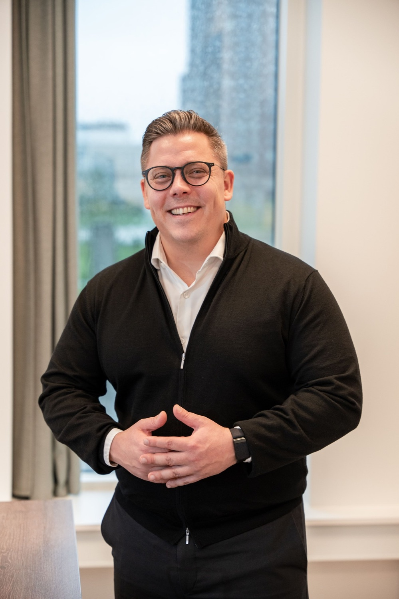
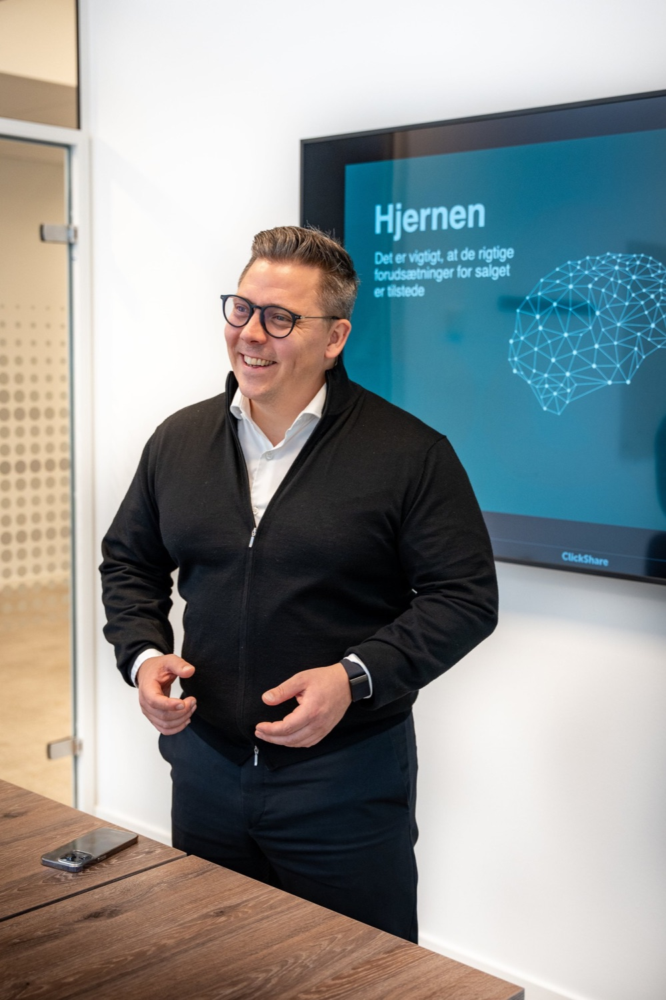

Fra Orange-sælger til 600+ virksomheder
Jeg har arbejdet med salg i over 20 år. Først som sælger, så som salgschef og i dag som træner for sælgere, rådgivere og ledere i beslutningspsykologi.


- 20+år i salg
- 100opkald om dagen, da jeg selv ringede
- 1.000+salgsmøder
- 600+virksomheder trænet
Min vej
- BegyndelsenSælger hos Orange
Op til 100 salgsopkald om dagen og mere end 1.000 salgsmøder. Her lærte jeg, hvad sælgere står over for.
- 2015Head of Sales i Adactit
16 måneder senere blev Adactit købt af TDC Group.
- 2017Birk & Neo
Jeg startede i mit køkken i Dragør. Efter 10 måneder havde jeg 1 mio. kr. i omsætning.
- 2023ADFÆRD med Morten Münster
Gæst i afsnit 87 om, hvordan man sælger mere, også selvom man ikke er sælger. Podcasten er i dag nr. 3 på Apple i Danmark.
- 2026Mastery Summit
Taler om beslutningspsykologi i Musikhuset.
- I dag600+ virksomheder
Hold hos blandt andre Sydbank, Boehringer Ingelheim, Howden, Tryg og Topdanmark. 529 medlemmer i Neurosalg.
Hvorfor beslutningspsykologi
Min interesse for neuropsykologi er blevet en fast del af den måde, jeg sælger og underviser på. NEO-metoden bygger på de bedste teorier fra beslutnings- og adfærdspsykologi og på teknikker, jeg selv har udviklet som sælger.
Metoden består af enkle teknikker, som du kan bruge i en helt almindelig samtale. I dag bruges den i mange af Danmarks største virksomheder.
“Det står i fuldstændig kontrast til alt, hvad jeg har lært indtil videre, men det fungerer overraskende meget bedre.”
Det står jeg for
- Ordentlighed
Jeg sælger kun noget, hvis jeg ved, at jeg kan hjælpe kunden.
- Rettidig omhu
I salg er rettidig omhu at holde mund og lytte efter, hvad kunden siger.
- Ærlighed
Jo mere ærlig du kan være, jo mindre modstand er der hos kunden.
“Jeg har selv købt salgstræning af rigtig mange, fordi jeg vil lære af alle.”
2 måder at arbejde med mig
For dig selv
Neurosalg er min online salgstræning til dig, der vil blive bedre på egen hånd. Masterclass, community og live-træning med mig hver mandag.
9.200 kr.ekskl. moms · engangsbetaling · livstidsadgang
Se Neurosalg → Fysisk salgstræningFor jeres salgsteam
1 til 3 dages træning med mig og derefter opfølgning i jeres egne møder over 3, 6 eller 12 måneder. Det første møde tager jeg selv.
47.000 kr.ekskl. moms pr. træningsdag
Se forløbet →